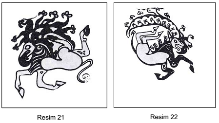
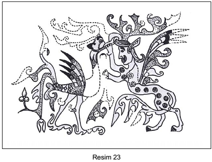

Levha 11

Resim 21: Mumyalanmış cesedin sağ ve sol kolu üzerindeki hayali yaratık
dövmeleri, II. Pazırık Kurganı (T.T. Rice, aynı eser, resim 57).
Resim 22: Mumyalanmış cesedin sağ ve sol kolu üzerindeki hayali yaratık
dövmeleri, II. Pazırık Kurganı (T.T. Rice, aynı eser, resim 58).

Resim 23: Keçe örtünün sağ köşesinde bulunan hayali yaratık figürinleri,
V. Pazırık Kurganı (T.T. Rice, aynı eser, resim 57).[192]